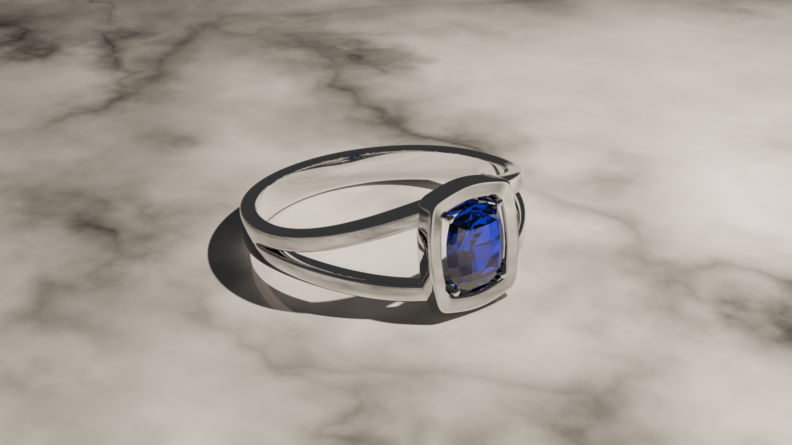
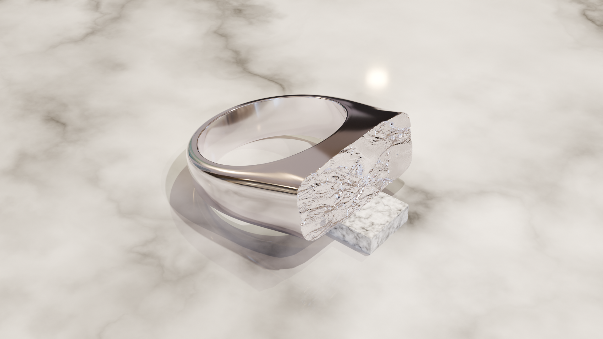
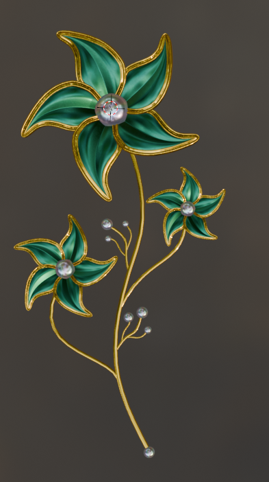
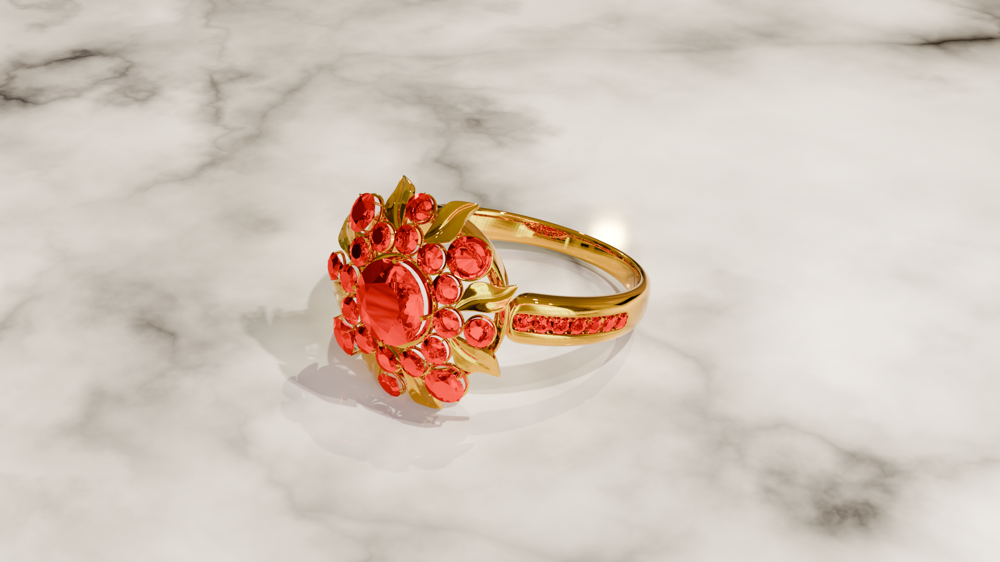

Réalisations Récentes
Un aperçu de mes dernières créations en modélisation 3D joaillière.







Bague cocktail en or jaune sertie de pierres rouges taille ronde, avec un pavage raffiné sur le corps de bague. Modélisation complète réalisée sur Rhinoceros 3D avec rendu photoréaliste KeyShot.
Voir toutes les créationsDe l'idée au bijou : un accompagnement complet en modélisation 3D pour la joaillerie.
Création de modèles 3D haute précision adaptés à la fabrication joaillière, fidèles à votre vision créative.
Visuels de qualité photographique pour présenter vos créations à vos clients avant fabrication.
Livraison de fichiers STL et OBJ compatibles avec tous les ateliers et imprimantes 3D.
Un aperçu de mes dernières créations en modélisation 3D joaillière.



Discussion autour de votre projet, croquis, références d'inspiration et contraintes techniques.
Création du modèle 3D avec précision millimétrique sur Rhinoceros 3D.
Visuels photoréalistes pour validation avant passage en production.
Fichiers STL et OBJ prêts pour l'impression 3D et la fonte.
Tout ce qu'il faut savoir avant de lancer la modélisation 3D de votre bijou.
La CAO (conception assistée par ordinateur) consiste à modéliser un bijou en 3D, à ses dimensions réelles, avant sa fabrication. Le fichier sert ensuite à imprimer la pièce en cire ou en résine, puis à la couler en métal.
Un croquis, des photos d'inspiration ou une description de la pièce, avec si possible le tour de doigt, les dimensions des pierres et le métal souhaité.
Des fichiers STL, pour l'impression 3D et la fonte, et OBJ, pour le rendu et la visualisation. Ils sont vérifiés et inclus avec chaque modélisation.
Les prix sont indicatifs : à partir de 40 € pour un solitaire simple, 50 € pour un pendentif, 130 – 150 € pour un bracelet tennis. Le rendu photoréaliste est à +20 €. Voir la grille complète.
Je suis basé à Paris et je travaille avec des joailliers, ateliers et créateurs partout en France : tout se fait à distance, par email et téléphone.
Rhinoceros 3D et ZBrush pour la modélisation, KeyShot et V-Ray pour les rendus photoréalistes.
Je réponds sous 24 h, du lundi au samedi, avec un devis gratuit et personnalisé.